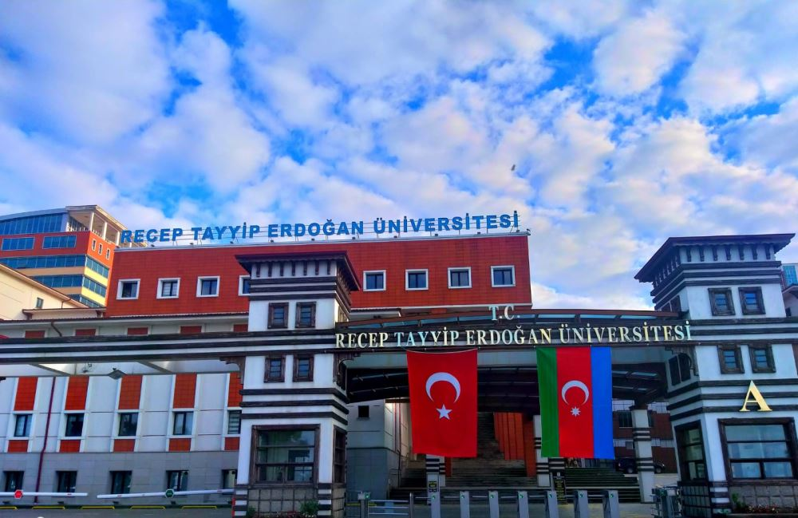

Rize şehri üniversite hayaline 2006 yılında kavuşmuş olsa da bu şehrin üniversite geçmişi 1950’li yıllara dayanmaktadır. Çayın ve yağmurun başkenti Rize ilinde 1950 yılında başlamış olan yükseköğretim serüveni, 2006 yılına gelindiğinde kendi adını taşıyan üniversitesine kavuşması ile devam etmiştir.
